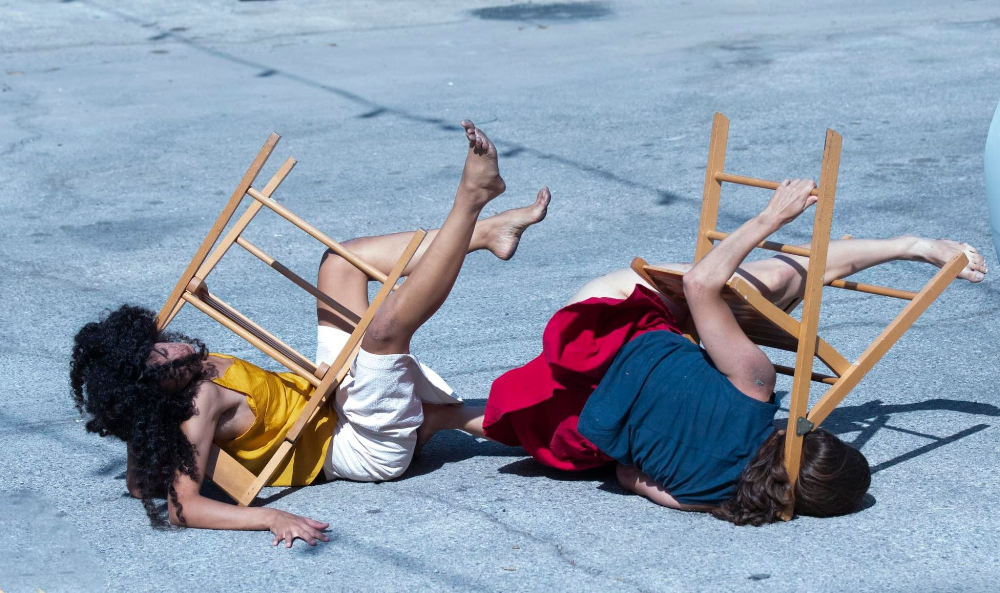
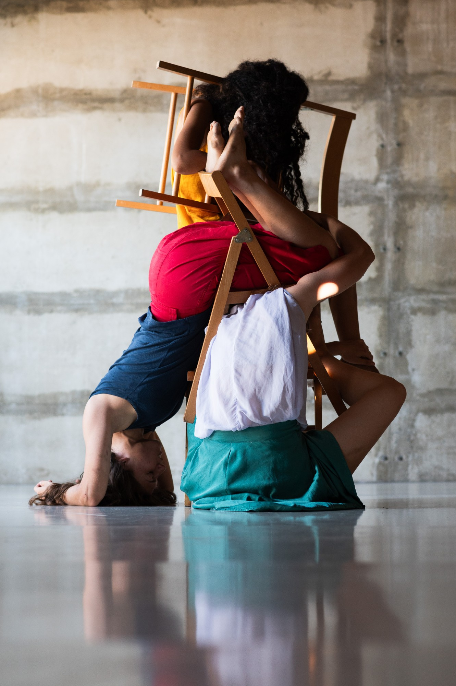
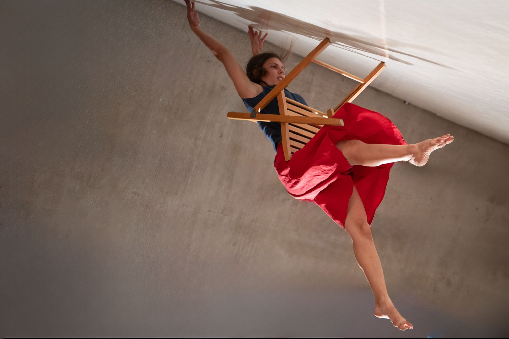
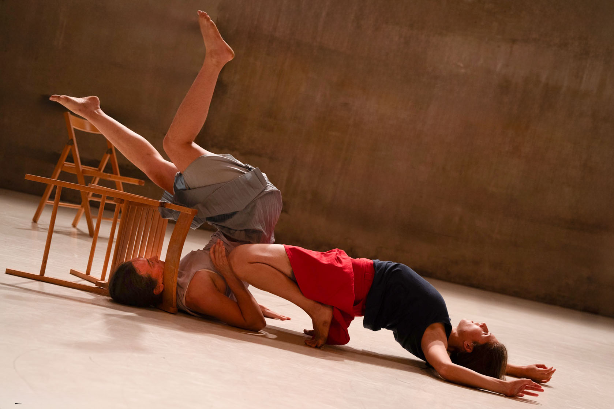
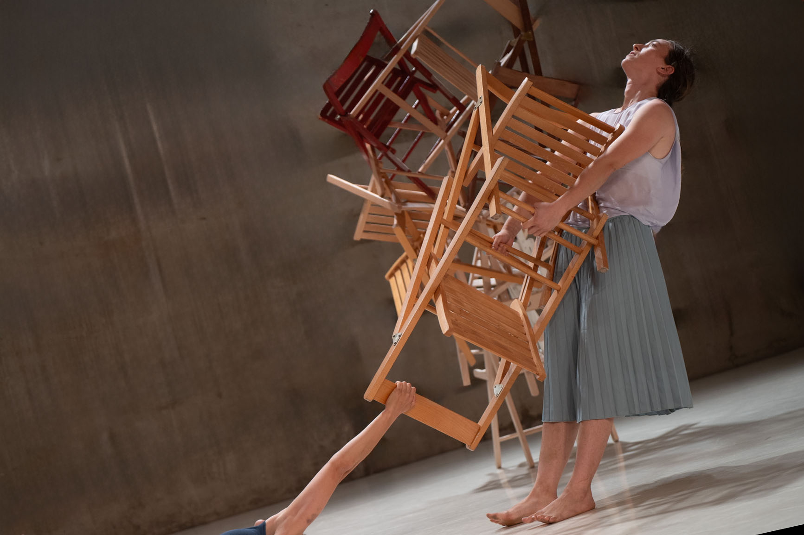

Stage · 2024
Boulder
Trio for three women and twenty chairs.

Teaser
Within a dense space of objects, three bodies move in a continuous struggle for grip, support and place. The chairs, a symbol of stability and sometimes also an obstacle, become another variable in the equation of relationships, power, dependence and fracture.
The work examines the tension between structure and collapse, between lines of support and cracks that open up. Three women in constant movement, searching for support, for each other, for themselves, and for a space that never stops changing.
Stills




Credits
Concept & choreography
Talia Barda
Dancers / creators
Ella Polak, Avishag Rosenfeld & Talia Barda
Premiere
Asif Festival, 2024 — Kelim Choreography Center
Artistic guidance
Ayala Frenkel
Partnering consultant
Nadav Alba Sharon
Video recording
Daniel Pakes & Ophir Ben Shimon
Video editing
Nadav Alba Sharon
Light design
Roten Elroee
Music
Björk, “All Is Full of Love”
Sound design
Nadav Alba Sharon
Photography
Yair Meyuhas, Dan Ben Ari & Galit Meushar